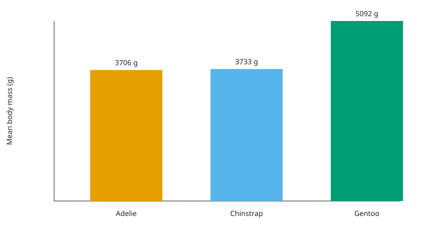

import pandas as pd
from IPython.display import SVG, display
from palmerpenguins import load_penguinsPalmer Penguins: A Python Analysis
Question and data
This post asks how body mass and bill length differ among the three penguin species in the Palmer Penguins dataset. The data come from the Palmer Penguins project and were collected by Dr. Kristen Gorman and the Palmer Station, Antarctica LTER. The dataset is released under the CC0 1.0 public-domain dedication. It is supplied by the palmerpenguins Python package, so no data file is downloaded while this post renders.
Data Preprocessing
Removing rows with missing values
penguins = load_penguins()
analysis_penguins = penguins.dropna(
subset=["species", "bill_length_mm", "body_mass_g", "sex"]
).copy()
print(f"Rows in the original data: {len(penguins)}")
print(f"Complete rows used in the analysis: {len(analysis_penguins)}")
analysis_penguins.head()Rows in the original data: 344
Complete rows used in the analysis: 333| species | island | bill_length_mm | bill_depth_mm | flipper_length_mm | body_mass_g | sex | year | |
|---|---|---|---|---|---|---|---|---|
| 0 | Adelie | Torgersen | 39.1 | 18.7 | 181.0 | 3750.0 | male | 2007 |
| 1 | Adelie | Torgersen | 39.5 | 17.4 | 186.0 | 3800.0 | female | 2007 |
| 2 | Adelie | Torgersen | 40.3 | 18.0 | 195.0 | 3250.0 | female | 2007 |
| 4 | Adelie | Torgersen | 36.7 | 19.3 | 193.0 | 3450.0 | female | 2007 |
| 5 | Adelie | Torgersen | 39.3 | 20.6 | 190.0 | 3650.0 | male | 2007 |
Compare the species
Then we calculate the sample size and mean body measurements for each species.
species_summary = (
analysis_penguins.groupby("species", observed=True)
.agg(
n=("species", "size"),
mean_body_mass_g=("body_mass_g", "mean"),
mean_bill_length_mm=("bill_length_mm", "mean"),
)
.round(1)
)
species_summary| n | mean_body_mass_g | mean_bill_length_mm | |
|---|---|---|---|
| species | |||
| Adelie | 146 | 3706.2 | 38.8 |
| Chinstrap | 68 | 3733.1 | 48.8 |
| Gentoo | 119 | 5092.4 | 47.6 |
Gentoo penguins are much heavier on average: about 5,092 g compared with about 3,706 g for Adelie and 3,733 g for Chinstrap penguins. Chinstrap penguins have the longest mean bill at approximately 48.8 mm.
The following figure is generated directly from the summary table. It uses an inline SVG so that the analysis does not require an additional plotting package.
plot_data = species_summary.reset_index()
width, height = 700, 420
left, top, plot_height = 90, 35, 300
bar_width = 120
gap = 80
maximum = plot_data["mean_body_mass_g"].max()
colours = ["#E69F00", "#56B4E9", "#009E73"]
elements = [
f'<svg xmlns="http://www.w3.org/2000/svg" width="{width}" height="{height}" '
f'viewBox="0 0 {width} {height}">',
'<style>text { font-family: sans-serif; fill: #222; }</style>',
f'<line x1="{left}" y1="{top}" x2="{left}" y2="{top + plot_height}" '
'stroke="#333"/>',
f'<line x1="{left}" y1="{top + plot_height}" x2="{width - 35}" '
f'y2="{top + plot_height}" stroke="#333"/>',
]
for index, row in plot_data.iterrows():
x = left + 60 + index * (bar_width + gap)
bar_height = row["mean_body_mass_g"] / maximum * plot_height
y = top + plot_height - bar_height
elements.extend(
[
f'<rect x="{x}" y="{y:.1f}" width="{bar_width}" '
f'height="{bar_height:.1f}" fill="{colours[index]}"/>',
f'<text x="{x + bar_width / 2}" y="{y - 8:.1f}" '
f'text-anchor="middle">{row["mean_body_mass_g"]:.0f} g</text>',
f'<text x="{x + bar_width / 2}" y="{top + plot_height + 25}" '
f'text-anchor="middle">{row["species"]}</text>',
]
)
elements.extend(
[
f'<text x="20" y="{top + plot_height / 2}" '
'transform="rotate(-90 20 185)" text-anchor="middle">'
'Mean body mass (g)</text>',
'</svg>',
]
)
display(SVG(data="".join(elements)))
To quantify those within-species trends, I calculate the correlation between bill length and body mass separately for each species.
species_correlations = (
analysis_penguins.groupby("species", observed=True)
.apply(
lambda group: group["bill_length_mm"].corr(group["body_mass_g"]),
include_groups=False,
)
.rename("correlation")
.round(3)
.to_frame()
)
species_correlations| correlation | |
|---|---|
| species | |
| Adelie | 0.544 |
| Chinstrap | 0.514 |
| Gentoo | 0.667 |
Bill length and body mass are positively corelated within all three species. The relationship is strongest for Gentoo penguins (correlation 0.667), followed by Adelie (0.544) and Chinstrap penguins (0.514). Overall, species explains a difference in typical body mass, while bill length still provides useful information about how it is corealted with body mass within each species.